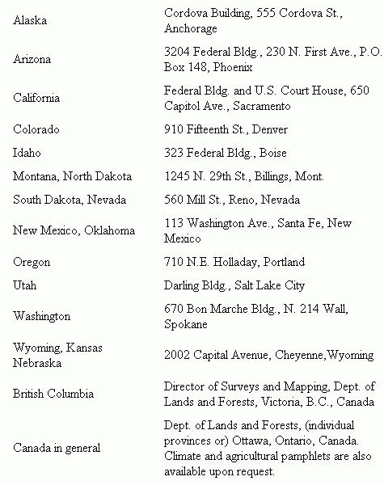

The first question that comes to mind is, "Is any free land available?" The answer is "Yes". . . with some qualifications.
Several countries have free or very lost cost land for homesteading but the acreage is often undesirable for varied reasons. The land in the southwestern United States lacks water, for instance, while some on the western coast of British Columbia may have too much rainfall for your taste.
There is free land available in Canada but much is located in cold regions with roads that are few and far between. Still, a few places look especially promising: If you have a knowledge of boats, you may be interested in the islands off the coast of British Columbia. Kootenai River and the western coast of British Columbia also appear promising for settlement.
Every province of Canada, for that matter, has a number of areas that might appeal to you . . . as do some of our own western states. For more information, write the Bureau of Land Management offices at the following addresses:
There are advantages to buying land. You may even save money in the long run if you consider the cost of putting in the roads, houses, barns and wells that are usually found on settled farm land which is for sale.
Some of the things to take into account when buying land are size, location, climate, price, farmable acreage, water access, roads and neighbors.
In buying my farm I first consulted United Farm Agency, 612 W 47th, Kansas City, Mo. 64112 and Strout Realty, P.O. Box 2757, Springfield, Mo. 65803. I requested their free catalogs and used them to locate the nearest area of the country where land was reasonably priced. This happened to be north-central Pennsylvania and almost the entire state of West Virginia.
By the way, there is no free land in West Virginia but much inexpensive acreage is available. The Market Bulletin, Department of Agriculture, Charleston, West Virginia lists land and other items for sale in the state.
With my search narrowed to two states, a visit to the public library told me that the southwestern section of West Virginia had the warmest climate and a trip to the state did the rest.
People in small grocery stores and local gas stations knew most of the land for sale in their area and the County Agricultural Extension Agent - there's one in every county seat - gave me much other valuable information about flooding, soil fertility, etc. in each county.
Our rugged old truck helped get me to the back roads where land was one fifth the price of acreage on the main highways. After a week of looking, I found a 93 acre farm with a nice log house for $2700. A local lawyer checked the deed for a small fee, I bought the land through him and, soon, we shall set up housekeeping and homesteading.
|
 |
|
|